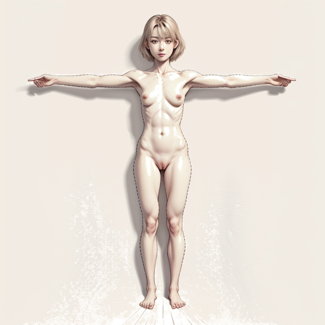

四人＝四季なので、パーソナルカラーの4分類を章の季節とそのまま一対一で対応させている。 その副産物として、コントラストが最弱から最強までの四段階のグラデーションになった。 顔のパーツを一切見なくても、画面の明度差だけで四人を並べ替えられる。
帯と色見本は各章の16色パレットから引いた実際の色。下段が主色・補色・アクセントの並び。
縦棒が身長、区切りが頭ひとつ分。区切りが大きいほど頭が体に対して大きい。楓と柊が両極で、身長の順序と等身の順序が完全に逆になっている。
各キャラクターの設定上の頭身比率（6.5〜8.0）と顔の造形を厳密に反映したAI生成画像です。季節ボタンでそれぞれの素体画像を切り替えられます。

ボタンを切り替えることで、4人の特定の部位（顔・バスト・ウエスト・脚）を横並びでズーム比較できます。
左から順に、髪・瞳・肌の明度差が開いていく。桃香は三つが近い明度で並び、柊は最大の明度差をつくる。
髪を消しても四人が判別できることを条件に組んだ軸。下線はその人物だけが持つ、または四人の中で極にある特徴。
| 軸 | 🌸 桃香 | 🌻 向日葵 | 🍁 楓 | ❄️ 柊 |
|---|---|---|---|---|
| 色の型 | ||||
| パーソナルカラー | イエベ春 | ブルベ夏 | イエベ秋 | ブルベ冬 |
| コントラスト | 最弱 | 弱 | 中 | 最強 |
| 髪色 | 4人中最も明るい茶（ブラウンベージュ） | 青みのソフトなダークブラウン〜黒 | 温かみのある深いブラウン寄りの黒・濡れた艶 | 青みのある真っ黒 |
| 瞳の色 | 4人中最も明るい茶 | 濃い | 明るめブラウン | グレー最も色素が薄い |
| 肌 | 白く透明感・頬に血色 | 青みを含んだ白・日に灼けない | 色白・マット | 眩しいほどの白さ・血の気が薄い |
| 顔 | ||||
| 顔の型 | 丸み寄り・縦横比はマイルド | 大人びた卵型〜やや面長 | 面長 | 卵型・曲線的 |
| 顔の大きさ | スタイルの良さを感じる程度の小顔 | 標準 | 4人中最も小顔 | 小さい |
| 年齢感 | 実年齢どおり | 最年少なのに最も大人びた顔 | 実年齢どおり | 実年齢より幼い |
| 眉 | 真っ直ぐ・薄いが細くはない | 太めで直線的・色はソフトなグレイッシュ | 垂れ眉 | やや垂れ眉・困り眉 |
| 目の形 | 切れ長と柔らかさの中間・凛とした | 大きく丸い | 離れ目4人中唯一・垂れ目 | 大きく丸くうるんだ |
| 二重 | 奥二重4人中唯一 | 二重・幅が広い | 二重 | 二重 |
| 黒目 | 標準 | 大きい | 黒目がち | 黒目がち |
| 口 | ふっくらコーラルピンク・口元にほくろ | 小さめ・口角がやや上がる | 薄い上唇＋ふっくら下唇 | 小ぶり |
| 赤面の出方 | 頬→首筋へジワジワ | 頬中央の円形→胸元まで一気に | 鼻梁と耳たぶだけ・抑圧 | 青白さとの対比 |
| 体 | ||||
| 身長／頭身 | 160cm ／ 7.5 | 170cm ／ 7.0 | 165cm ／ 8.0 | 155cm ／ 6.5 |
| 体型 | 細身で小柄 | ふくよか・ダイナマイトボディ・健康体そのもの | 細身で繊細・線が細い | ふくよかだがメリハリなし・やや幼児体型 |
| メリハリ | 中（胸と腰のくびれに若干） | 最大 | 少（細さで構成） | 最少・全身が曲線的 |
| 質感 | — | 健康的な張り | 削げた繊細さ | ムニムニしたぬいぐるみ感 |
| 髪型 | 4人中最短のショート・外ハネ | ロングウェーブ・下ろした前髪 | ロングストレート・センターパート | ミディアムボブ・細い髪質 |
| 髪の扱い | （短いため該当なし） | まとめない | 勤務時は夜会巻き | 未定 |
| 構造 | ||||
| 社会的ペルソナ | 潔癖で正義感溢れる教師 | 明るく快活な人気者 | 隙のない憧れの先輩 | 守ってあげたくなる可憐さ |
| 内面の欠落 | 尊厳と他者評価への固執 | 視線への無自覚な依存 | 穏やかな顔で神経質、口を開けば毒 | 自己決定の拒絶 |
| 破綻の主体 | 強制 | 偶然 | 強制 | 自発自ら降りる |
| 加害者 | 政治家たち（明確） | 最後まで明かされない | 後輩男子（明確） | 不在（自分自身） |
| 着地 | 完全適応（おむつ） | 放逸と露出 | 立場逆転と服従 | 退行と擬態 |
| 下着 | 魅せるレース | 機能一辺倒 | 完璧な上下セット | ブラを着けない |
| 靴 | パンプス（規律） | 紐スニーカー（自分で走る） | パンプス（教養と資力） | マジックテープ（結ぶのを放棄） |
向日葵は最年少18歳なのに最も大人びた顔と最も豊満な体、柊は19歳で最も幼い顔と体。1歳差の二人を両極に置いたことで、年齢が身体を保証しないという不穏さが出る。
向日葵と柊はどちらもふくよかだが、向日葵はメリハリの最大値、柊はメリハリの最小値。同じ語で正反対を指すので、シルエットだけで完全に別人になる。
目の形は他三人が被ることを許容した代わりに、瞼の構造で一人だけ独立させた。残りを割っているのは楓の離れ目と柊のグレーの瞳で、この二つは他の誰も持っていない。